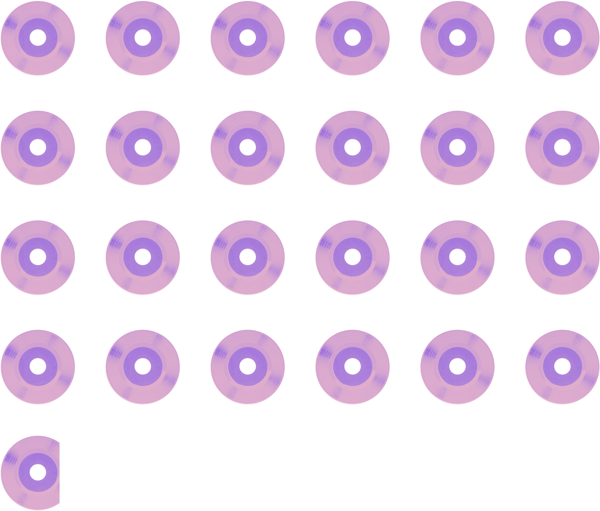

I'd rather
walk
Exploring "walkable" areas in Charlotte, NC based on what matters to me
By Luisa Vasquez
I moved to Charlotte less than a year ago. And one of the things I still cannot get used to is that I have to drive everywhere.
I used to live in Cambridge, Massachusetts; a suburb across the river from Boston filled with cobblestone sidewalks, ivy-covered brick buildings, and most memorably to me — easily accessible amenities that were all within walking distance.
A picture of a perfect weekend
To me, a great weekend includes getting some books at the library, curling up to read them on a picnic blanket, and grabbing coffee at a cute coffee shop with some friends.
When I lived in Cambridge, all of these things were simple to do and easy to walk to while listening to some tunes.
Number of times I could listen to Olivia Rodrigo's 'Driver's License
While walking to the library in Cambridge...
If I walked to the library from where I live in Charlotte...
The 11 minute walk to the library in Cambridge is much more reasonable than a 1 hour and 40 minute walk in Charlotte.
According to Google Maps the majority of the walk to the library in Charlotte would be along a high speed road that doesn't have a sidewalk. I couldn't safely travel this route.
Walkability vs. Car culture
While chatting with other Charlotte transplants who came from various cities, I noticed that everyone had a different definition of what makes an area “walkable”, based on what matters to them.
Some come from cities with a big car culture and do not care about walkability when choosing where to live — they are content to drive everywhere.
Walkability is important to me, and until now I have always lived in walkable neighborhoods.
I had joked that I would deem an area walkable if I could walk to the library and a cute coffee shop in 20 minutes.
Where could I live in Charlotte?
I had a hunch that my low-estimation of Charlotte's walkability was colored by the exact area I live in, and likely doesn't reflect the experience of living everywhere in the city limits.
So I decided to create a personal “walkability index” based on my preferences, to determine whether there is anywhere in Charlotte that would meet my walkability criteria.
Unlike the national walkability index, that takes a variety of factors into account, my hypothetical "index" is based on my own criteria: access to libraries and coffee shops.